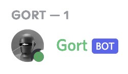

Gort is a music-playing Discord Bot with a variety of features. Most notably, Gort is my project,
which means it's constantly improving. With Gort, you can listen to high-quality media through discord calls
completely free of cost.
Add Gort to your Discord server.
Gort utilises a combination of ffmpeg
and YouTube's Data API
to stream audio through Gort into your voice call.
Gort is, and will always be, completely free to use.
If you would like to peek into the nitty-gritty of Gort, feel free to check out the project on my
GitHub.
Gort's commands can be accessed through Discord's slash command interface, or through the use of
plain-old text commands by prefix-ing the command with Gort's server prefix (! by default).
[arg] - required parameter
(arg) - optional parameter
Oliver Rayner 2022
oliverr@mit.edu / +1 (914) 708 8835 / oliver.e.rayner@gmail.com